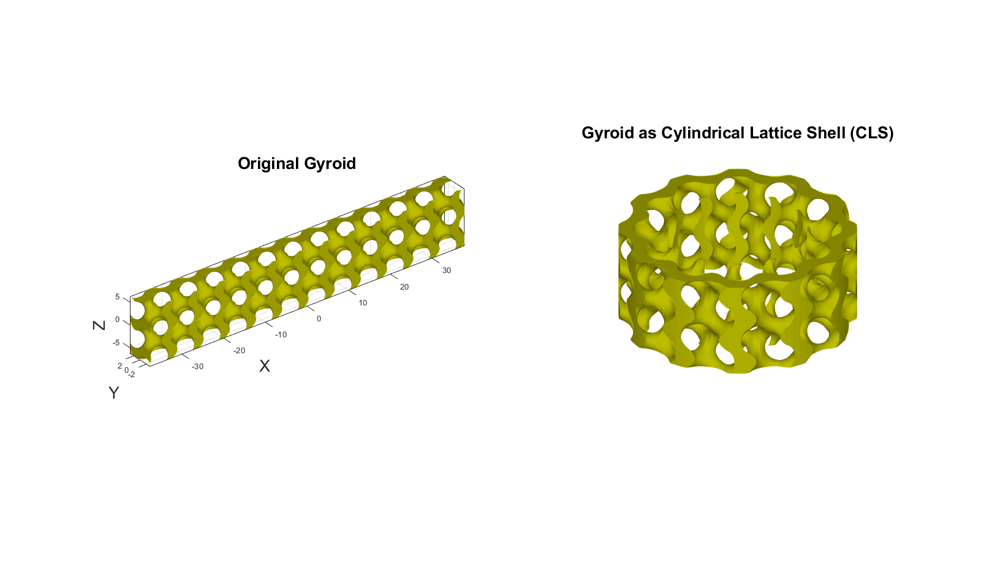

DEMO_0010_Cylindrical_Lattice_Shell_gyroid
This is a demo for:
- Building geometry for Cylindrical Lattice Shell (CLS), using gyroid structure.
- For more information: Wang, Y., Ren, X., Chen, Z., Jiang, Y., Cao, X., Fang, S., Zhao, T., Li, Y., & Fang, D. (2020). Numerical and experimental studies on compressive behavior of Gyroid lattice cylindrical shells. Materials & Design, 186, 108340. https://doi.org/10.1016/J.MATDES.2019.108340
Contents
Name
License: to license
Author: Mahtab Vafaee, mahtab.vafaee@gmail.com
Change log: 2023/11/15 MV Created 2024/02/2 MV Edited ----------------------------------------------------------------------
clear; close all; clc;
Plot settings
fontSize=20; faceAlpha1=0.8; markerSize=10; lineWidth1=3; lineWidth2=4; markerSize1=25;
Control parameters
sampleSize=[12,1,2]; % Size of the sample % sampleSize=[1,1,2]; % Single Cell levelSet = 0.6; %Corelates to volume fraction n=100; % Set the resolution
create a grid
x = linspace(-sampleSize(1)*pi,sampleSize(1)*pi,n); y = linspace(-sampleSize(2)*pi,sampleSize(2)*pi,n); z = linspace(-sampleSize(3)*pi,sampleSize(3)*pi,n); [X,Y,Z] = meshgrid(x,y,z);
Evaluate triply periodic function
calculate the grid value to create gyroid field
S=(sin(X).*cos(Y))+(sin(Y).*cos(Z))+(cos(X).*sin(Z));
% creating a surface
[Fi,Vi]=isosurface(X,Y,Z,S,levelSet);
[Fc,Vc]=isocaps(X,Y,Z,S,levelSet);
[F,V]=joinElementSets({Fi,Fc},{Vi,Vc});
[F,V]=mergeVertices(F,V);
r=12; % a radius to conserve circumferential area c= max(y)-min(y); rho = Y + r; % converting the y coordinates to radius theta = (X./c)*(2*pi/12); % calculate the rotation/curvature of the grids
mapping from polar to new cartesian coordinates
% compute Cartesian coordinates for grid points X1 = rho .* cos(theta); Y1 = rho .* sin(theta); Z1 = Z; % creating a surface [Fi,Vi]=isosurface(X1,Y1,Z1,S,levelSet); [Fc,Vc]=isocaps(X1,Y1,Z1,S,levelSet); [F1,V1]=joinElementSets({Fi,Fc},{Vi,Vc}); [F1,V1]=mergeVertices(F1,V1);
Visualize original and deformed surfaces
cFigure; hold on; subplot(1,2,1); hold on; title('Original Gyroid','FontSize',fontSize); gpatch(F,V,[0.75, 0.75, 0],'none',1); gca.Xcolor= 'red'; axis on; axisGeom(gca,fontSize); camlight headlight; drawnow; hs=subplot(1,2,2); hold on; title('Gyroid as Cylindrical Lattice Shell (CLS)','FontSize',fontSize); gpatch(F1,V1,[0.75, 0.75, 0],'none',1); axisGeom(gca,fontSize); axis off; box on; camlight headlight; drawnow;